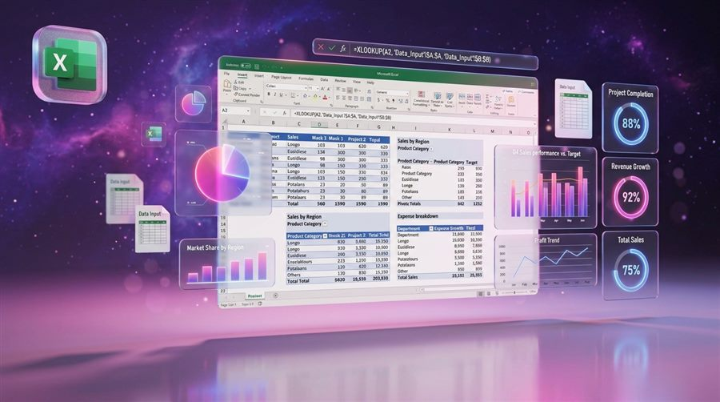
Excel-এ কি-বোর্ড শর্টকাটে কাজ দ্বিগুণ গতিতে — ১০টা চমৎকার শর্টকাট
প্রতিদিন Excel-এ ঘণ্টার পর ঘণ্টা কাটলে এই ১০টা শর্টকাট আপনার সময় অন্তত অর্ধেক কমিয়ে দেবে। ব্যবহারিক উদাহরণসহ সহজভাবে সাজানো।
পড়ুনMicrosoft Office টিপস, গ্রাফিক ডিজাইন টিউটোরিয়াল আর ফ্রি AI টুল — ১৮ বছরের অভিজ্ঞতা থেকে ভাগ করে নেওয়া। সোজা ভাষায়, কাজের ভাষায়।

প্রতিদিন Excel-এ ঘণ্টার পর ঘণ্টা কাটলে এই ১০টা শর্টকাট আপনার সময় অন্তত অর্ধেক কমিয়ে দেবে। ব্যবহারিক উদাহরণসহ সহজভাবে সাজানো।
পড়ুন
স্টাইল, টেবিল অব কনটেন্ট, মেইল মার্জ, ট্র্যাক চেঞ্জসহ Word-এর গুরুত্বপূর্ণ ফিচার দিয়ে প্রফেশনাল ডকুমেন্ট বানান।
পড়ুন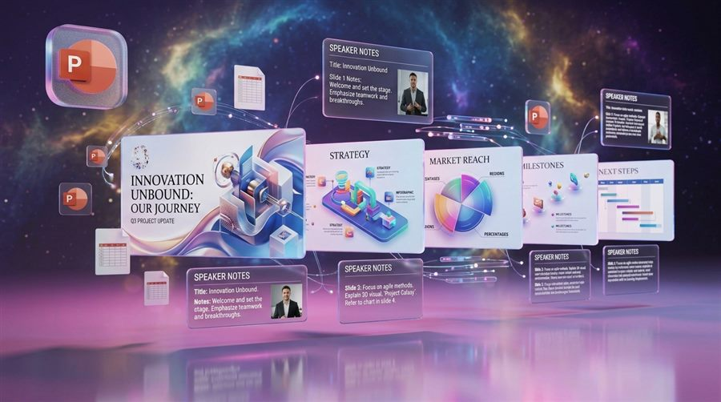
লেআউট, ভিজ্যুয়াল হায়ারার্কি, অ্যানিমেশন, মাস্টার স্লাইড — প্রেজেন্টেশন প্রফেশনাল করার ৭টা কার্যকর টেকনিক।
পড়ুন
টেবিল, প্রাইমারি কী, ফর্ম, কোয়েরি ও রিপোর্ট — বুক লাইব্রেরির বাস্তব উদাহরণ দিয়ে Access শিখুন সহজ বাংলায়।
পড়ুন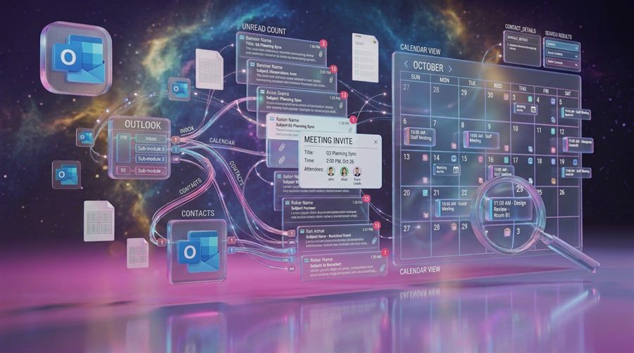
ইনবক্স জিরো, ফোল্ডার ও রুল, কুইক স্টেপস, কালার ক্যাটাগরি — Outlook গোছাতে ৬টা কার্যকর পদ্ধতি।
পড়ুন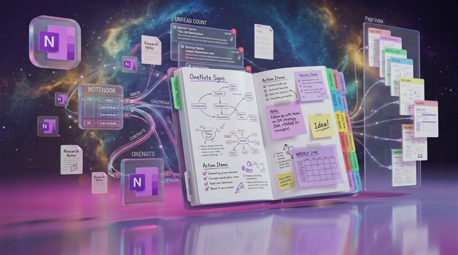
নোটবুক/সেকশন/পেজ, ট্যাগ, সার্চ, অডিও নোট ও ওয়েব ক্লিপার দিয়ে ডিজিটাল নোট গুছিয়ে রাখুন।
পড়ুন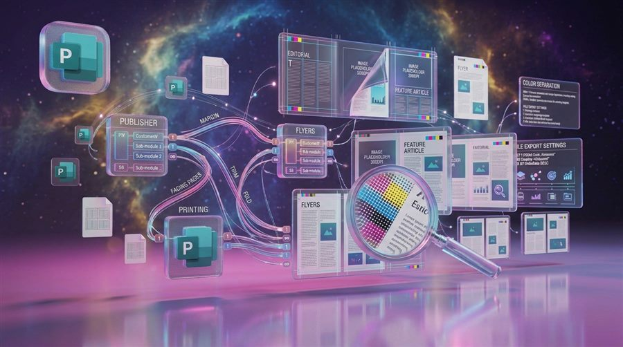
পেজ সাইজ, মাস্টার পেজ, টেক্সট ফ্রেম — Publisher দিয়ে প্রিন্ট-রেডি ফ্লায়ার-ব্রোশিওর বানান।
পড়ুন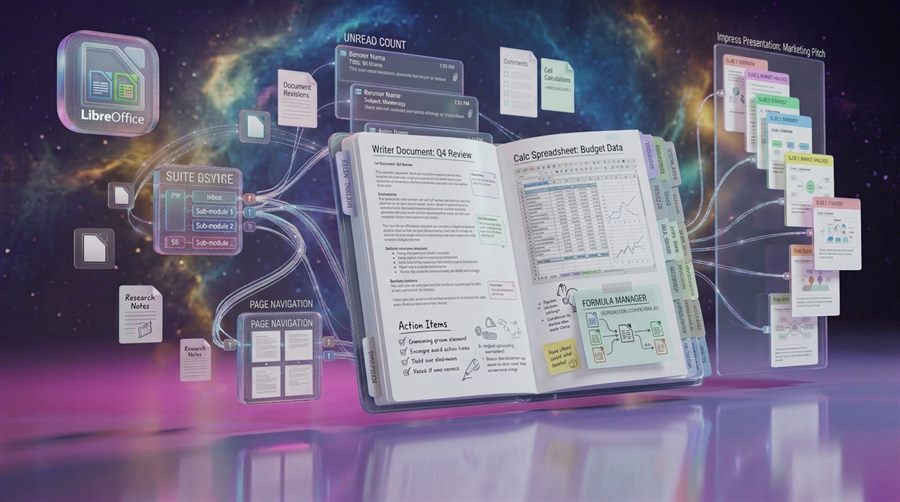
Writer/Calc/Impress দিয়ে কীভাবে Microsoft Office-এর ফাইলও চলবে — LibreOffice-এর সম্পূর্ণ বাংলা গাইড।
পড়ুন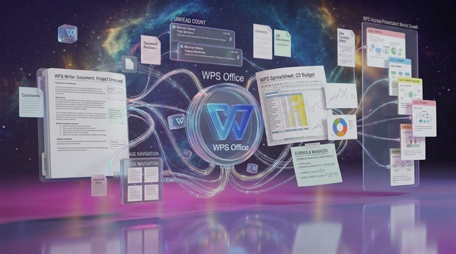
হালকা ইনস্টলেশন, PDF টুল, রেডিমেড টেমপ্লেট — WPS Office-এর বৈশিষ্ট্য ও Microsoft-ফাইলের সামঞ্জস্য।
পড়ুন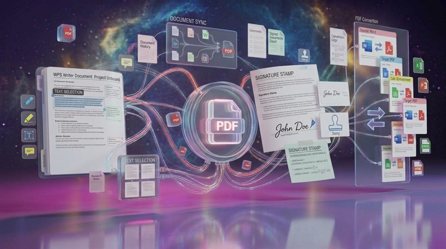
PDF-এ টেক্সট এডিট, মার্জ, কমপ্রেস ও কনভার্ট — প্র্যাকটিক্যাল কাজের উদাহরণসহ সহজ বাংলা গাইড।
পড়ুন
Designing faster doesn't need an expensive suite. These 5 free AI-powered tools cut out the busywork and level up output quality.
Read More
Selection, cropping, healing and layers — master the 8 core Photoshop tools and build your first beginner workflow.
Read More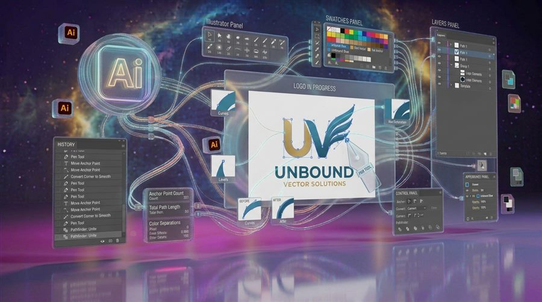
Pen tool, Shape Builder, Pathfinder, global colors and SVG export — the smart approach to logos and vector art.
Read More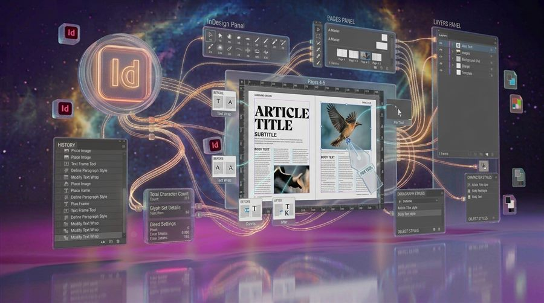
Master pages, paragraph styles, grids and preflight — make print-ready documents that never embarrass you on press.
Read More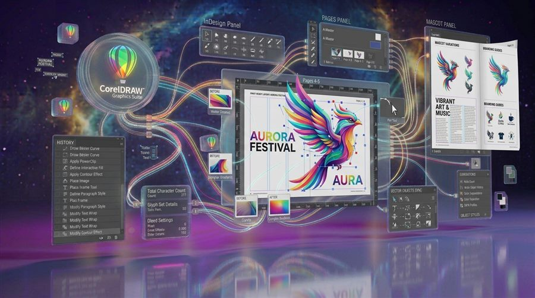
Workspace setup, shapes, the Object Manager, color styles and a print-ready export — CorelDRAW in six easy steps.
Read More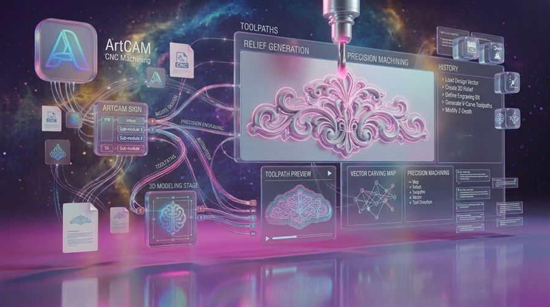
Vector drawing, relief modeling, safe toolpaths and clean output — take a 2D drawing all the way to CNC machining.
Read More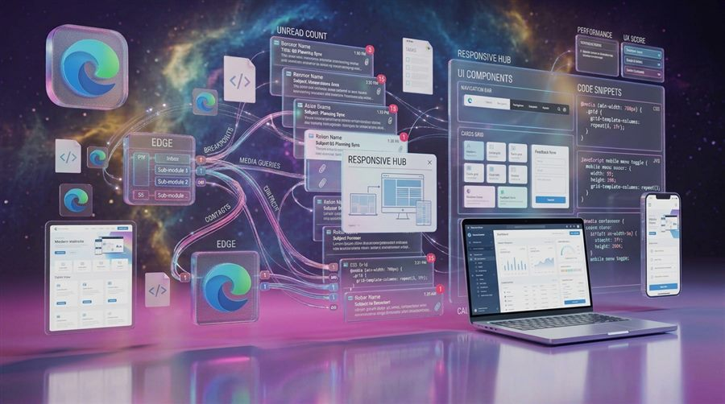
Purpose, above-the-fold message, mobile-first design, strong CTAs and analytics — conversion is a checklist, not a mystery.
Read More
Image generation, AI transcription, presentation helpers and design tools — AI apps you can use right now, with a simple workflow.
Read More